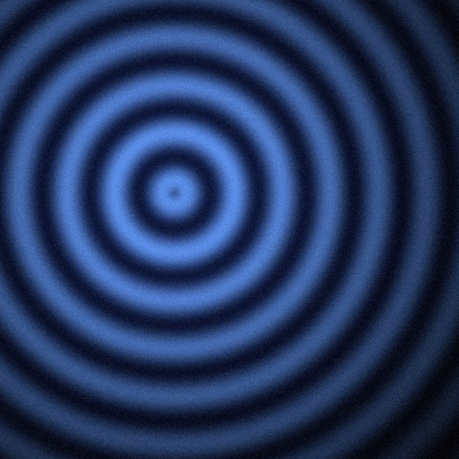
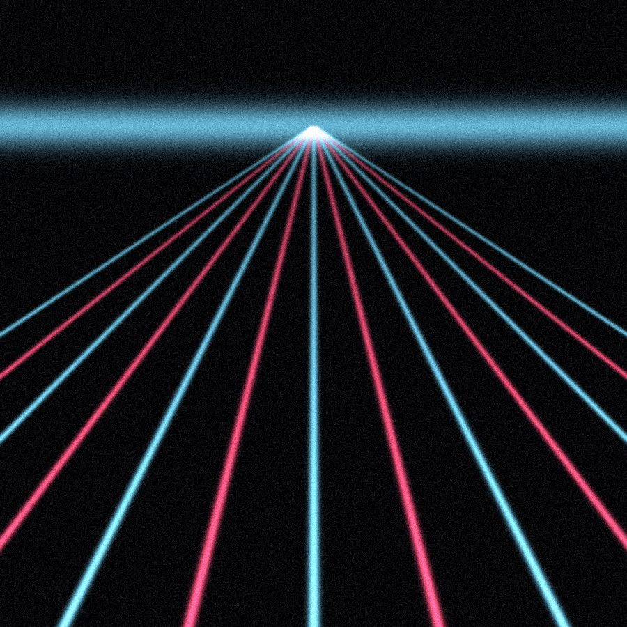

{{SITE}}
Accueil
Musique
Concerts
Biographie
Billets
Écouter
Musique
Nouvel album
Lumière basse
Sortie le 12 décembre {{YEAR}} · 10 titres · 41 minutes
01
Lumière basse
extrait · 0:26 sur 3:42
02
Nuit claire
extrait · 0:26 sur 4:05
03
Dernière rame
extrait · 0:26 sur 3:18
0:00 / 0:26
Discographie
Les disques
Lumière basse
{{YEAR}} · album

Nuit claire
2024 · album

Dernière rame
2022 · EP